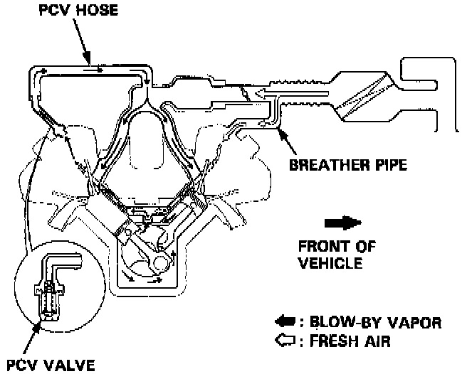

Positive Crankcase Ventilation: Description and Operation

PURPOSE/OPERATION
The Positive Crankcase Ventilation system is designed to prevent blow-by gas from escaping to the atmosphere. The positive crankcase ventilation valve contains a spring-loaded plunger. When the engine starts, the plunger in the positive crankcase ventilation valve is lifted in proportion to intake manifold vacuum and the blow-by gas is drawn directly into the intake manifold.